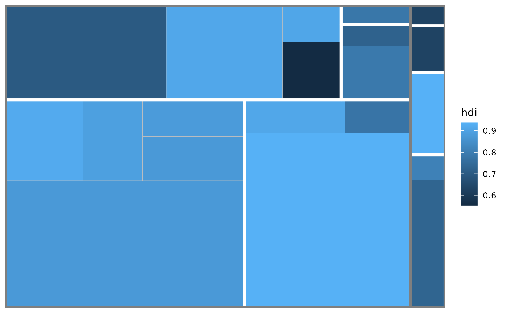

'ggplot2' geoms to draw a border around a subgroup of treemap tiles.
Source:R/geom_treemap_subgroup_border.R
geom_treemap_subgroup_border.RdWhen geom_treemap() is used with a subgroup, subgroup2 or subgroup3
aesthetic to subgroup treemap tiles, geom_treemap_subgroup_border,
geom_treemap_subgroup2_border() or geom_treemap_subgroup3_border() can
be used to draw a border around each subgroup at the appropriate level.
Usage
geom_treemap_subgroup_border(
mapping = NULL,
data = NULL,
stat = "identity",
position = "identity",
na.rm = FALSE,
show.legend = NA,
inherit.aes = TRUE,
fixed = NULL,
layout = "squarified",
start = "bottomleft",
level = "subgroup",
...
)
geom_treemap_subgroup2_border(...)
geom_treemap_subgroup3_border(...)Arguments
- mapping, data, stat, position, na.rm, show.legend, inherit.aes, ...
Standard geom arguments as for
ggplot2::geom_rect().- fixed
Deprecated. Use
layout = 'fixed'instead. Will be removed in later versions.- layout
The layout algorithm, one of either 'squarified' (the default), 'scol', 'srow' or 'fixed'. See Details for full details on the different layout algorithms.
- start
The corner in which to start placing the tiles. One of 'bottomleft' (the default), 'topleft', 'topright' or 'bottomright'.
- level
One of 'subgroup', 'subgroup2' or 'subgroup3', giving the subgrouping level for which to draw borders. It is recommended to use the aliases
geom_treemap_subgroup2_border()andgeom_treemap_subgroup3_border()instead of this argument.
Details
geom_treemap_subgroup_border() geoms require area and subgroup (or
subgroup2, subgroup3`) aesthetics. Several other standard 'ggplot2'
aesthetics are supported (see Aesthetics).
Note that 'ggplot2' draws plot layers in the order they are added to the
plot. This means that if you add a geom_treemap_subgroup_border() layer
followed by a geom_treemap_subgroup2_border() layer, the second layer will
be drawn on top of the first and may hide it.
The layout argument is used to set the treemap layout algorithm. All
'treemapify' geoms added to a plot should have the same value for layout
and start, or they will not share a common layout (see geom_treemap() for
details on the layout algorithms).
Examples
ggplot2::ggplot(G20, ggplot2::aes(area = gdp_mil_usd, fill = hdi,
subgroup = hemisphere, subgroup2 = region)) +
geom_treemap() +
geom_treemap_subgroup2_border(colour = "white") +
geom_treemap_subgroup_border()
